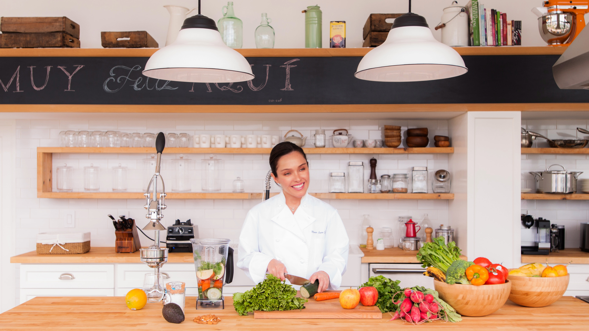

— Alfonso Lugo
La comida es información.

Como coach nutricional, de vida y espiritual, mi programa se basa en la bio-individualidad y en la bio-química.
Ninguna persona es igual, no tenemos el mismo metabolismo, tipo de sangre, edad, actividad física, etc. Mis programas consisten en saber quiénes somos, quién eres tú, cuáles son tu metas, tus sueños y objetivos, sobre todo te ayudo a descubrir qué es lo que puedes mejorar para llegar a ellas, aumentar tu energía y reducir el estrés de la vida cotidiana.
Lo que hacemos juntos es una re-programación de viejos hábitos no solo a nivel nutricional, si no físico, mental, emocional y espiritual que son la base del equilibrio que necesitas para poder lograr tener la vida que quieres y que mereces.
Soul Healthy
Living.
Durante los últimos 6 años, he estado trabajando como Life Coach, guiando a la gente a encontrar su camino para vivir una vida más saludable y más feliz.
Recibí entrenamiento profesional en Institute for Integrative Nutrition en NYC, NY.
He estudiado junto con Deepak Chopra, Gurumayi Chidvilasananda, Joshua Rosenthal, David Wolfe, Andrew Weil, John Duillard, Baptiste Marceau, Larry Schultz, entre muchos otros.
Recibí mi titulo de Chef de Cocina y Repostería en Le Cordon Bleu en París, Francia.
Estudie Enología y Viticultura completando un curso de Master Sommelier de dos años en Barcelona.
Testimonios.
“María es increíble,
con ella verdaderamente aprendí a comer.”
Hoy en día hay tantos factores a considerar que es muy fácil que puedas confundirte. Como dice ella, todo influye, hasta la ropa que llevas puesta… Leer etiquetas, indagar un poco más en el origen de la comida, saber qué te va a caer bien a ti porque eres único… Su plan es totalmente personalizado y te quita la venda de los ojos de una vez por todas. Estoy muy agradecido y satisfecho de haber tomado su curso. ¡Cien por ciento recomendado!
“Yo pensaba que comía
y vivía sanamente…”
Dra. Karla Carter —
...hasta que conocí a María y me enseñó lo que es mejor para mi cuerpo físico, mental y espiritual. Ahora vivo con mas energía y feliz de saber que hay muchas opciones de comida rica que no sólo nutren mi cuerpo sino mi Ser. Eres Maravillosa!
“Mi experiencia fue muy enriquecedora, busqué a María con la idea de mejorar algunos hábitos…”
...y de tener mas información, pero fue mas grata mi sorpresa ya que aprendí a darle el valor a cada área en mi vida (Yo, pareja, familia, amigos, trabajo, deporte, espiritualidad, hobbies, etc. ) que nos complementa para estar en armonía con nosotros y con el todo. Por ejemplo… a veces comemos cierto tipo de alimentos para llenar vacíos inconscientes. Reforcé el somos lo que comemos pero ahora con conciencia así que hoy cada vez que mi cuerpo me pide algo no solo lo escucho lo nutro con Amor.
— Nejla Sosa